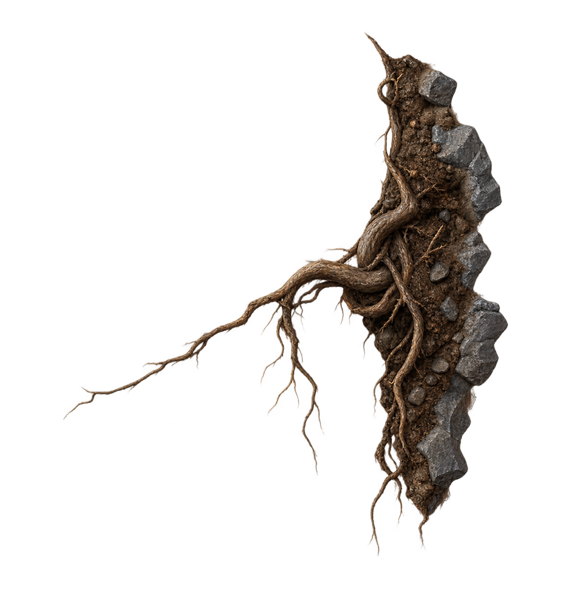
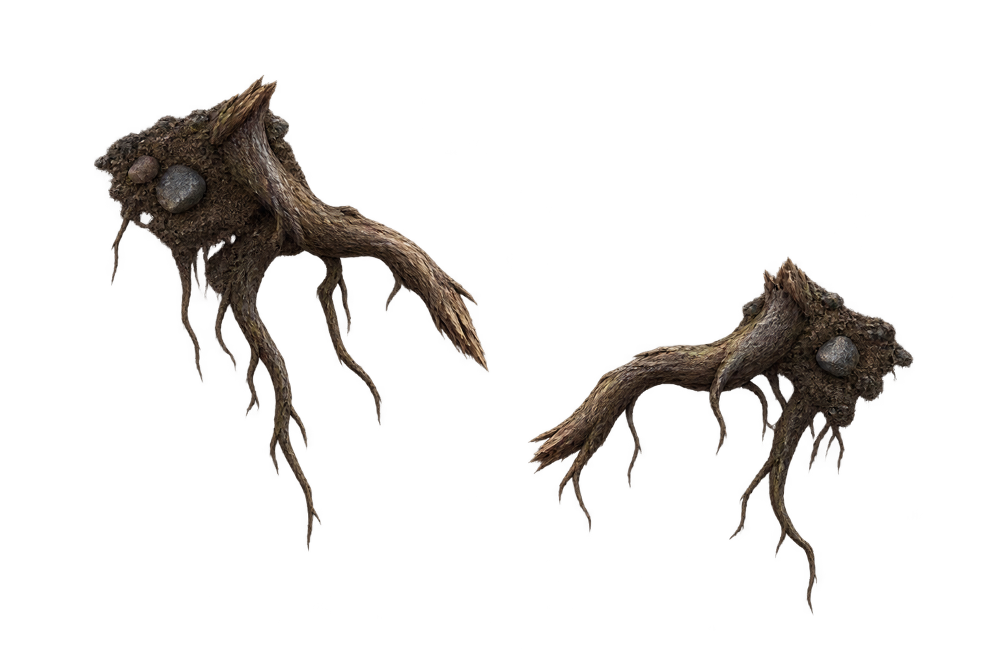
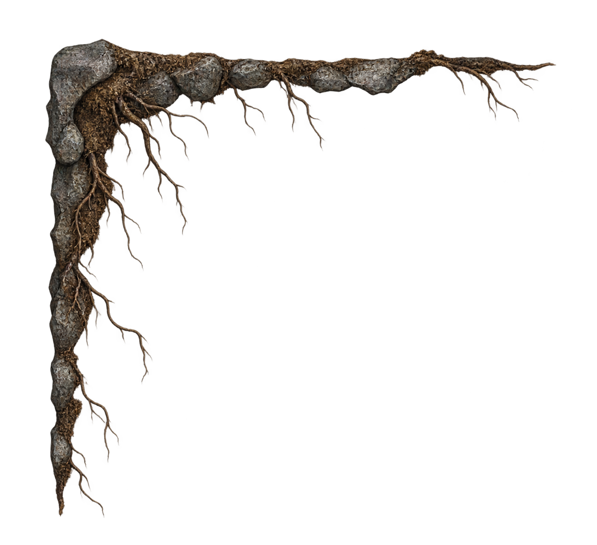

root-accents-01
three thin dry brown roots dangling from a short soil seam
(1213, 1297) | RGBA40 generated pieces. Click an image for full resolution. Existing core tiles remain unchanged. Art gallery only; placement and halo cleanup precede wiring.
three thin dry brown roots dangling from a short soil seam
(1213, 1297) | RGBA
one small tangled root knot hugging a vertical soil boundary
(1226, 1283) | RGBAsparse thin branching roots exposed along a narrow earth edge
(1536, 1024) | RGBA
two short old broken roots protruding from tiny soil clumps
(1536, 1024) | RGBA
fine threadlike roots following an open wall-to-ceiling corner
(1312, 1199) | RGBA